소득은 무엇으로 결정될까?
우리 사회는 오랫동안 교육을 통해 소득을 만들 수 있다고 믿어 왔고, 고학력과 학벌이 소득을 좌우한다고 여겨 자녀 교육에 많은 투자를 해 왔습니다.
미국 통계를 보면 대학 졸업자의 평균 소득은 전체 근로자 평균보다 높습니다. 학력이 소득에 영향을 주는 건 맞지만, 학력만으로 소득이 정해진다고 보기는 어렵습니다. 성별, 가족 구성원 수, 태어난 해, 결혼 여부 같은 다른 정보도 소득에 직간접적으로 영향을 줄 수 있기 때문입니다.
이번 시간에는 개인 정보 중 무엇이 소득과 관련 있는지 알아보고, 그 정보로 소득을 예측해 봅니다.
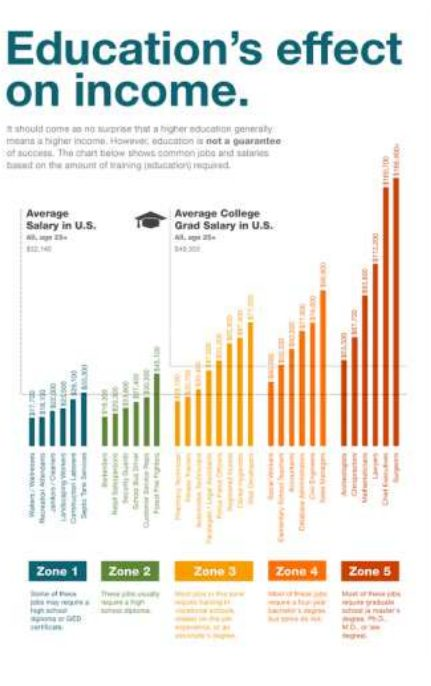
개인 소득 데이터 세트
캐글(Kaggle)은 2010년에 문을 연 예측 모델·데이터 분석 대회 플랫폼입니다. 기업이나 단체가 데이터와 과제를 올리면 데이터 과학자들이 모델을 만들어 경쟁하기 때문에, 기계학습용 데이터를 쉽게 구할 수 있습니다.
kaggle.com에서 「Korea Income and Welfare」를 검색해 Korea Income and Welfare.csv를 내려받습니다. 2005년부터 2018년까지 14년(14차) 동안 한국인의 소득, 지역, 종교 등을 조사한 자료로, 92,877행 × 14개 속성입니다.
결측값이 너무 많은 occupation, company_size, reasonnoneworker 3개 속성은 지우고, 가장 최근인 2018년 데이터만 골라 income2018.csv(1,137행)로 저장해 사용합니다.
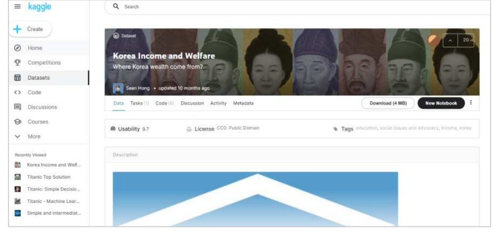
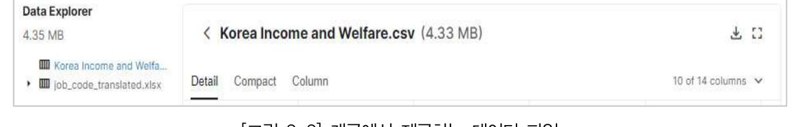
| 속성 | 의미 | 값 | 설명 |
|---|---|---|---|
| id | 연구대상자 아이디 | 10101~ | 순번(예측에 쓰지 않음) |
| year | 조사 연도 | 2005~2018 | 연구를 수행한 해 |
| wave | 차수 | 1~14 | 2005년 1차 ~ 2018년 14차 |
| region | 지역 | 1~7 | 1 서울 2 경기 3 경남 4 경북 5 충남 6 강원·충북 7 전라·제주 |
| income | 연간 소득 | 숫자 | 예측할 값(target) |
| family_member | 가족 구성원 수 | 1 이상 | |
| gender | 성별 | 1, 2 | 1 남성 2 여성 |
| year_born | 태어난 해 | 1900 이상 | |
| education_level | 학력 | 1~9 | 1·2 교육 없음 3 초 4 중 5 고 6 전문대 7 대학 8 석사 9 박사 |
| marriage | 결혼 상태 | 1~6 | 1 해당없음(18세 미만) 2 기혼 3 사별 4 별거 5 미혼 6 기타 |
| religion | 종교 유무 | 1, 2 | 1 있음 2 없음 |
| occupation | 직업 종류 | 149종 | 결측 많음 → 삭제 |
| company_size | 회사 규모 | 1~11 | 결측 많음 → 삭제 |
| reasonnoneworker | 미취업 사유 | 1~11 | 결측 많음 → 삭제 |
캐글 설명에는 소득 단위가 '백만 원'으로 적혀 있지만, 실제 값(예: 2330, 5008)을 보면 만 원 단위로 읽는 편이 자연스럽습니다. 수업 전에 데이터 값을 직접 열어 보고 학생들과 단위를 함께 확인해 보세요.
File 위젯으로 불러오고 역할 정하기
① 오렌지3을 실행하고 File 위젯을 캔버스에 놓은 뒤 더블클릭해 income2018.csv를 엽니다.
② Columns 목록에서 각 속성의 형식(Type)과 역할(Role)을 정합니다. 결과값인 income은 target, id는 skip, 나머지는 원인이므로 feature로 둡니다.
③ Data Table 위젯을 연결해 데이터가 제대로 들어왔는지 확인합니다. Visualize numeric values를 켜면 값의 크기를 막대로 볼 수 있습니다.
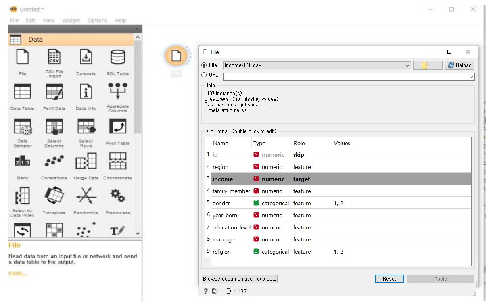
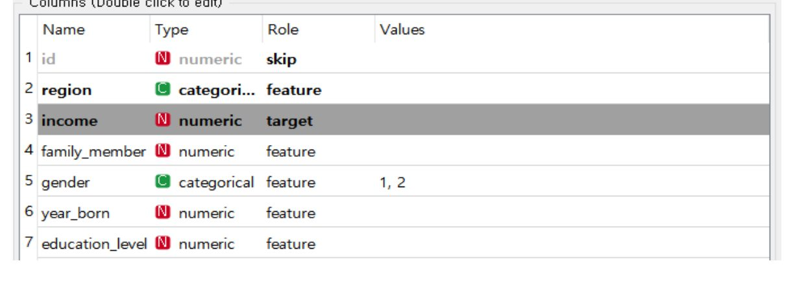
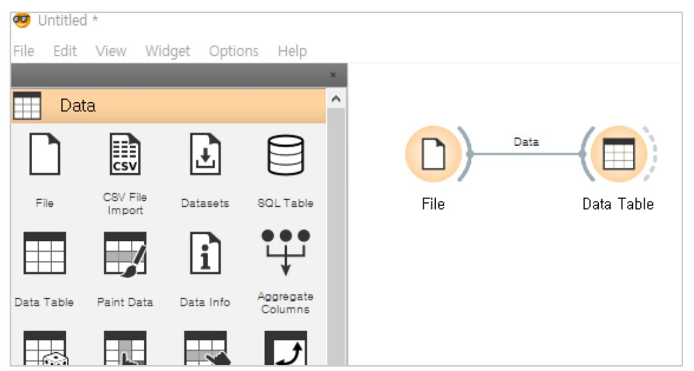
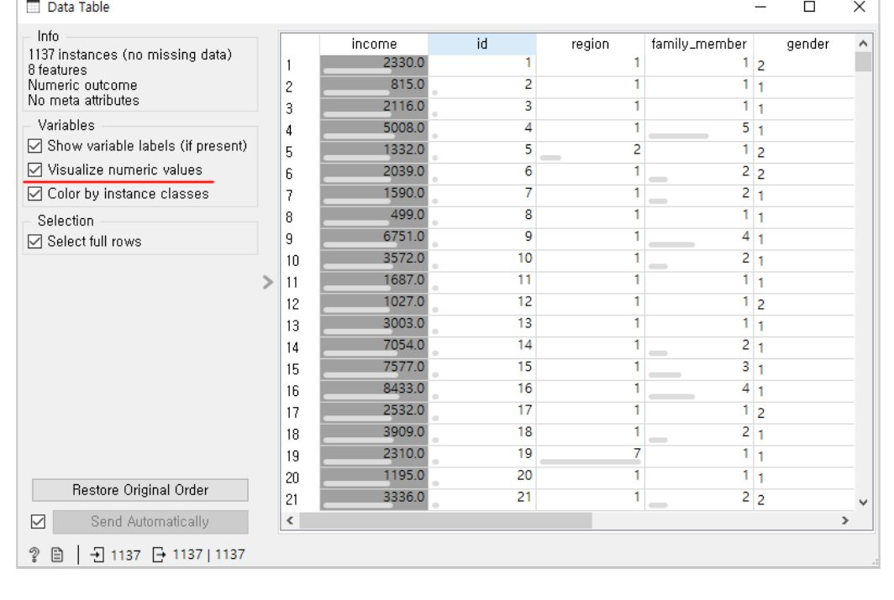
| Name | Type | Role |
|---|---|---|
| id | numeric | skip |
| region | categorical | feature |
| income | numeric | target |
| family_member | numeric | feature |
| gender | categorical | feature |
| year_born | numeric | feature |
| education_level | numeric | feature |
| marriage | numeric | feature |
| religion | categorical | feature |
어떤 속성이 소득과 관련 있을까?
분석할 데이터를 여러 관점에서 살펴보고 특성을 이해하는 과정을 데이터 탐색이라고 합니다. 좋은 모델을 만들려면 꼭 거쳐야 하는 단계입니다. File 위젯에 Rank, Correlations, Scatter Plot을 각각 연결해 봅시다.
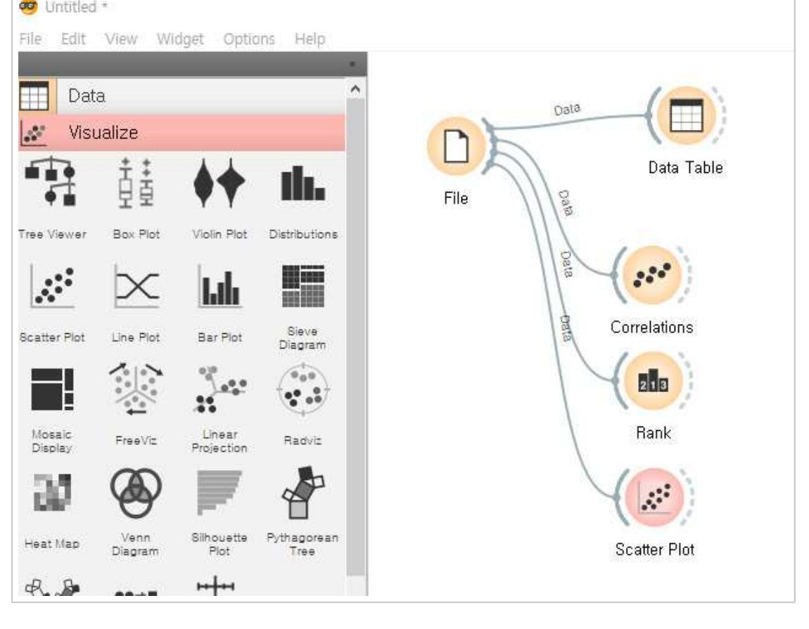
Rank: 속성 순위 매기기
Rank는 각 속성이 target을 얼마나 잘 설명하는지 점수로 보여 줍니다. 회귀에서는 Univariate Regression(속성 하나로 하는 선형 회귀)과 RReliefF(비슷한 데이터끼리 target 값을 얼마나 잘 구별하는지) 점수를 제공합니다.
| 속성 | RReliefF |
|---|---|
| year_born | 0.110 |
| education_level | 0.102 |
| family_member | 0.096 |
| region | 0.048 |
| marriage | 0.022 |
| religion | 0.009 |
| gender | 0.000 |
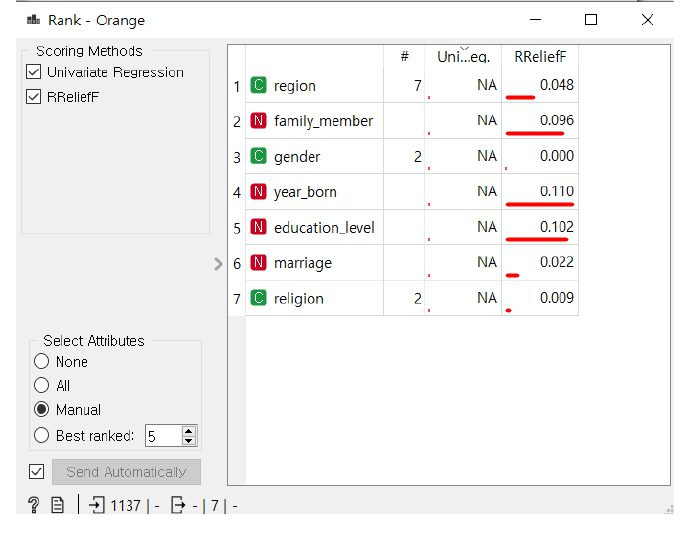
year_born, education_level, family_member 순으로 영향이 크고, 나머지는 영향이 작게 나옵니다.
Correlations: income과의 상관계수 (Pearson)
family_member(+0.58)와 education_level(+0.47)은 상관계수의 절댓값이 0.4 이상이고, year_born(−0.398, 반올림하면 −0.40)도 0.4 수준입니다. 태어난 해가 늦을수록(젊을수록) 소득이 낮은 경향이라 음수가 나옵니다. marriage(−0.31)는 약한 상관, region은 거의 상관이 없습니다.
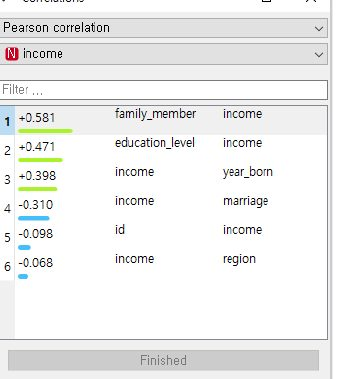
Scatter Plot: 산점도로 직접 보기
Correlations의 출력(Data, Features)을 Scatter Plot에 연결하면 고른 속성 쌍을 바로 산점도로 볼 수 있습니다. Axis x를 income으로 두고 Axis y를 바꿔 가며 Show regression line을 켜 보세요.
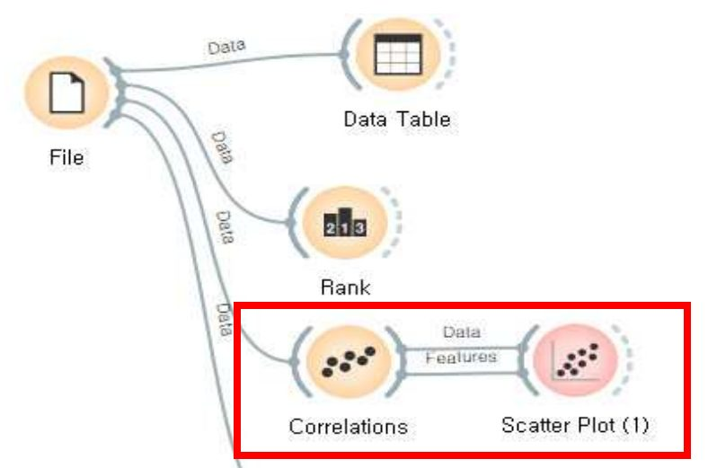
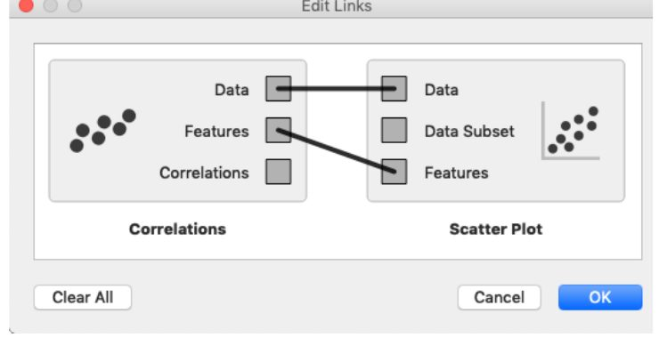
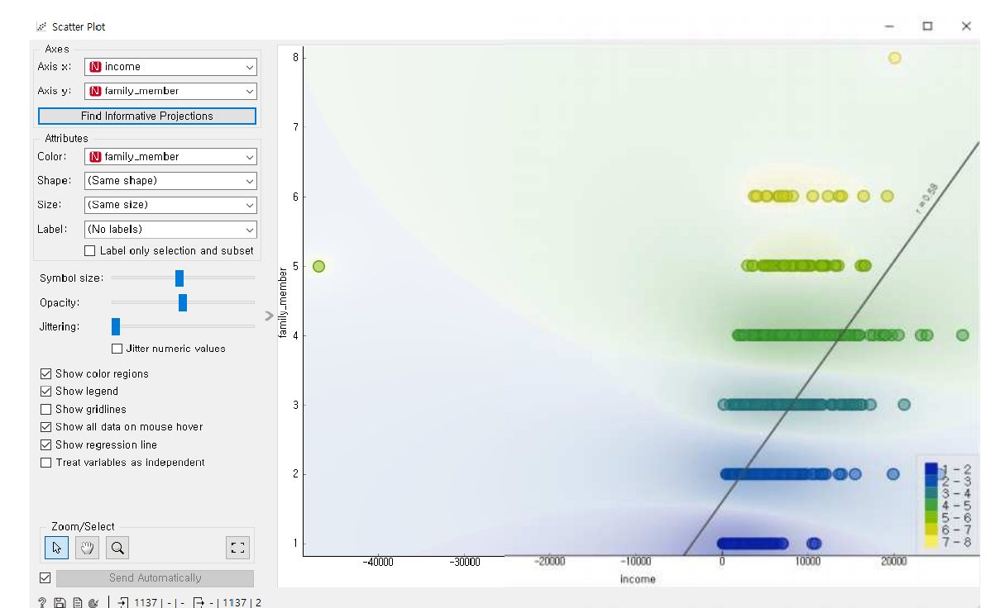
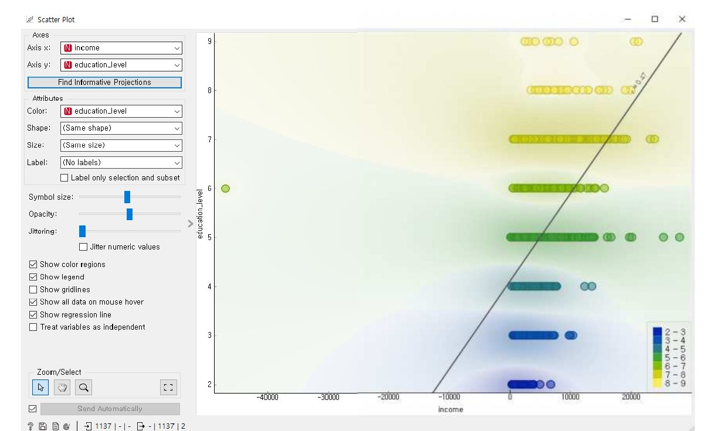
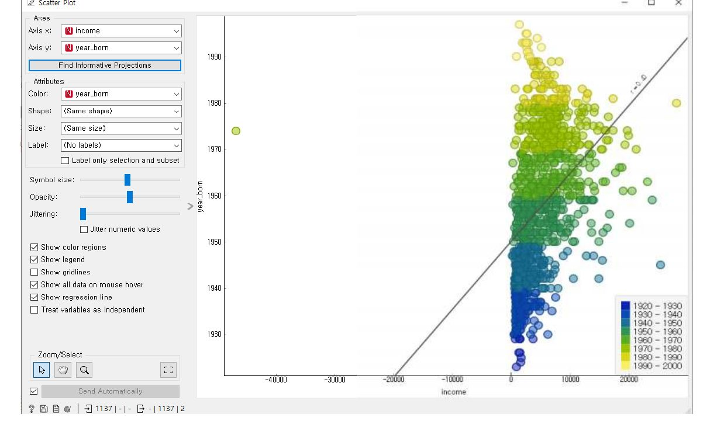
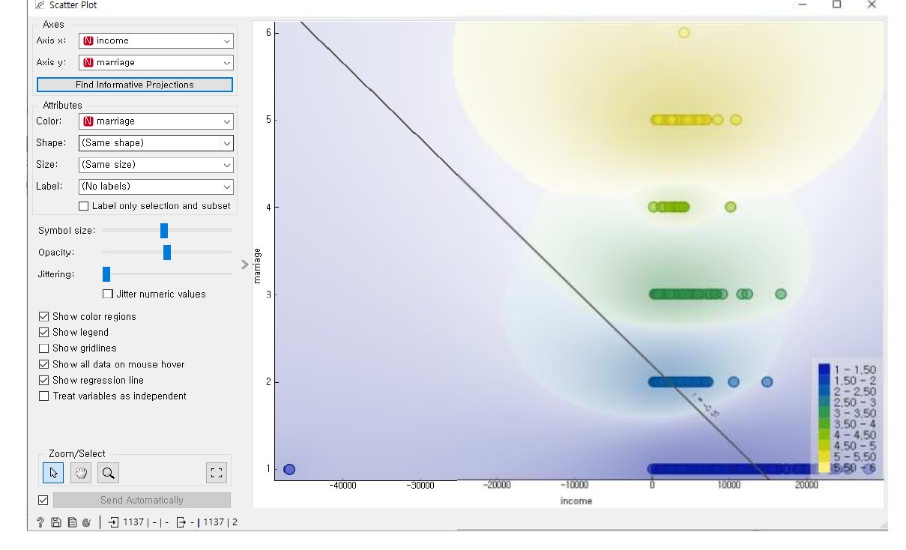
| Axis y | r | 해석 |
|---|---|---|
| family_member | 0.58 | 상관관계가 있다 |
| education_level | 0.47 | 상관관계가 있다 |
| year_born | −0.40 | 음의 상관관계가 있다 |
| marriage | −0.31 | 약한 음의 상관관계 |
income이 −40,000 근처인 점이 하나 보입니다. 소득이 음수인 사람이 있을까요? 이런 이상치가 회귀선을 얼마나 끌어당기는지 학생들과 이야기해 볼 만합니다.
상관계수란?
두 수치형 변수 사이의 선형 관계를 잽니다. 한 변수가 변할 때 다른 변수가 일정한 비율로 함께 변하면 1이나 −1에 가까워집니다.
예) 생산 설비 온도가 오를 때 초콜릿 코팅 두께가 함께 변하는가?
원래 값 대신 순위로 계산합니다. 함께 늘거나 줄기만 하면, 변하는 비율이 일정하지 않아도 1이나 −1이 됩니다. 순서형 변수에 자주 씁니다.
예) 테스트를 끝낸 순서가 근무 개월 수와 관련 있는가?
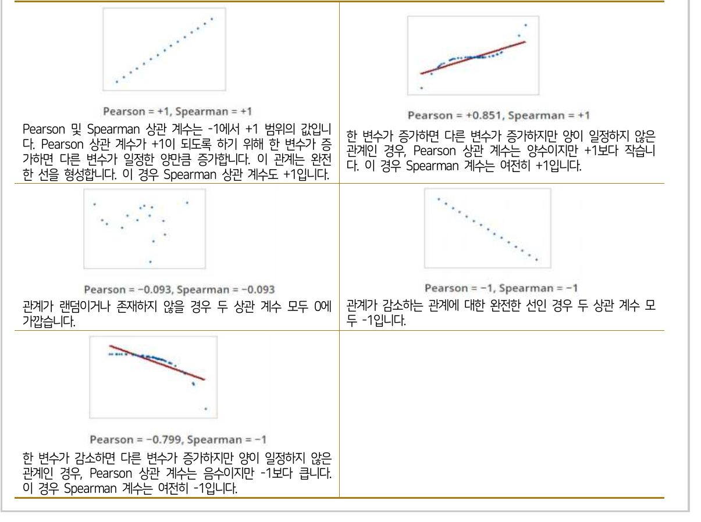
직접 움직여 보기
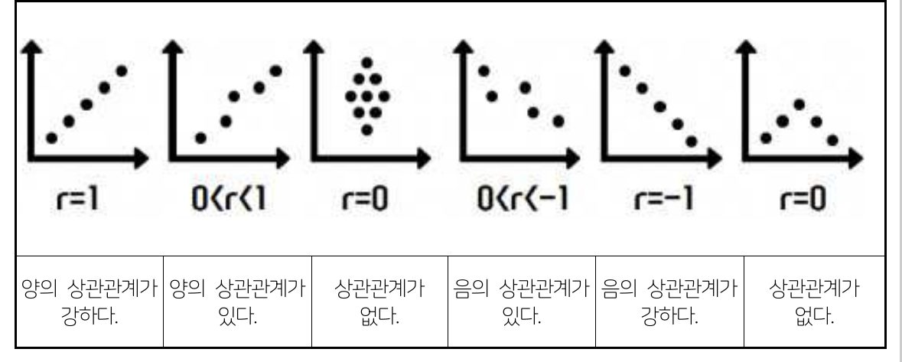
| |r| 범위 | 해석 |
|---|---|
| 0.0 ~ 0.2 | 상관관계가 거의 없다 |
| 0.2 ~ 0.4 | 상관관계가 낮다 |
| 0.4 ~ 0.6 | 상관관계가 있다 |
| 0.6 ~ 0.8 | 상관관계가 높다 |
| 0.8 ~ 1.0 | 상관관계가 매우 높다 |
상관계수는 두 변수가 함께 움직이는 정도만 알려 줍니다. 가족 수가 많아서 소득이 높은 것인지, 소득이 높아서 가족을 꾸린 것인지는 상관계수로 알 수 없습니다.
Select Columns로 학습할 속성 고르기
탐색 결과 income과 상관관계가 있는 속성은 family_member, year_born, education_level, marriage입니다. 반대로 region, gender, religion은 관계가 거의 없어서 학습에서 뺍니다.
Select Columns 위젯에서 Features에 4개 속성을, Target Variable에 income을 넣고, Data Table(1)을 연결해 원하는 열만 남았는지 확인합니다.
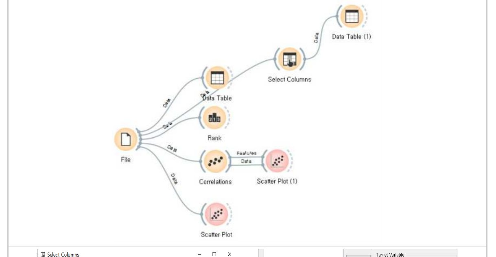
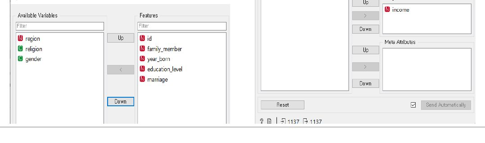
원 자료 화면에는 Select Columns의 Features에 id가 함께 들어가 있습니다. id는 일련번호라 소득과 관계가 없으므로 Available Variables 쪽으로 옮겨 두는 것이 맞습니다.
세 가지 회귀 모델 비교하기
Select Columns의 출력을 Linear Regression, kNN, Random Forest에 연결하고, 세 모델과 데이터를 모두 Test and Score에 연결합니다.
샘플링은 Random sampling(훈련 70%, 반복 10회)으로 설정합니다. 데이터를 섞어 무작위로 훈련용과 테스트용을 나누는 방식이라, 모델이 처음 보는 데이터로 평가됩니다.
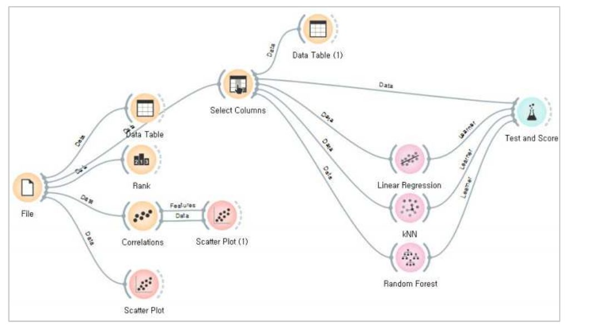
| Model | MSE | RMSE | MAE | R² |
|---|---|---|---|---|
| kNN | 15,710,050 | 3,963.6 | 2,558.1 | 0.128 |
| Random Forest | 11,958,144 | 3,458.1 | 1,974.1 | 0.336 |
| Linear Regression | 11,359,681 | 3,370.4 | 1,953.0 | 0.370 |
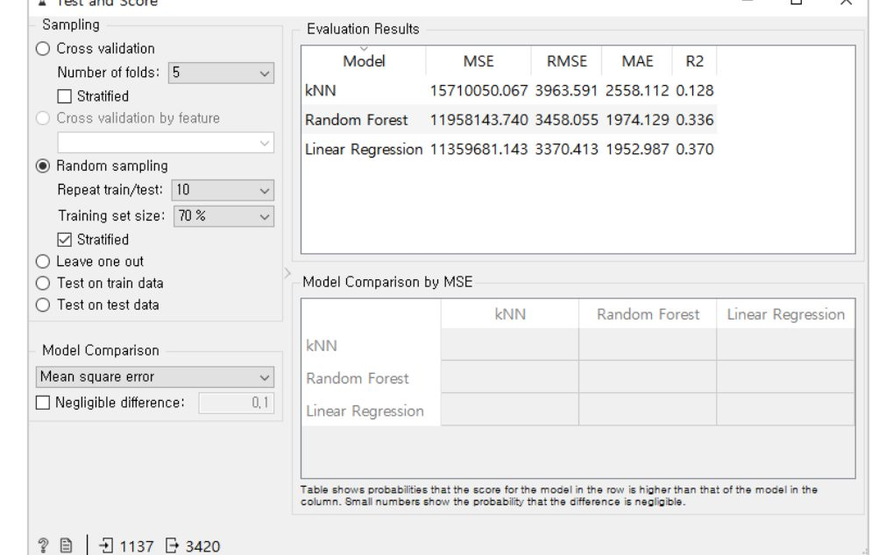
모든 지표에서 Linear Regression이 가장 좋고 kNN이 가장 낮습니다. 다만 R²가 0.37이라 소득 변화의 약 37%만 설명합니다. 2018년 데이터만 썼다는 한계가 있으니, 전체 데이터를 전처리해서 쓰면 성능이 나아질 수 있습니다.
Predictions로 예측값 확인하기
Evaluate 묶음의 Predictions 위젯을 놓고, 세 모델과 Select Columns의 데이터를 연결합니다. 창을 열면 각 모델이 사람마다 소득을 얼마로 예측했는지 실제 income 옆에 나란히 보입니다.
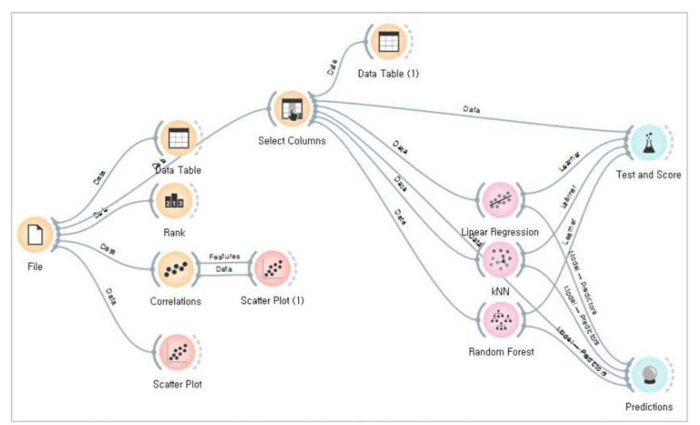
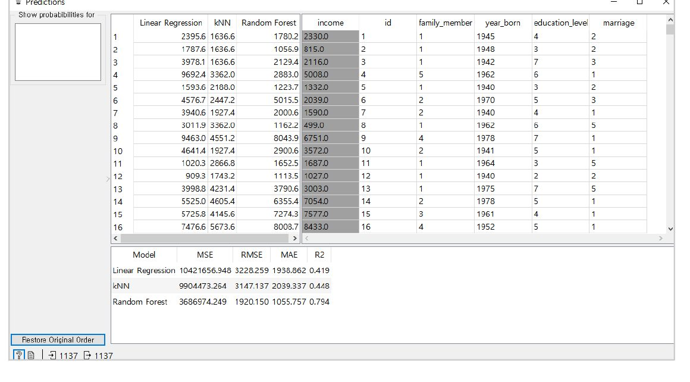
| # | Linear Reg. | kNN | Random Forest | 실제 income | 가족 수 | 출생 | 학력 |
|---|---|---|---|---|---|---|---|
| 1 | 2,395.6 | 1,636.6 | 1,780.2 | 2,330 | 1 | 1945 | 4 |
| 4 | 9,692.4 | 3,362.0 | 2,883.0 | 5,008 | 5 | 1962 | 6 |
| 9 | 9,463.0 | 4,551.2 | 8,043.9 | 6,751 | 4 | 1978 | 7 |
| 16 | 7,476.6 | 5,673.6 | 8,008.7 | 8,433 | 4 | 1952 | 5 |
| Model (Predictions) | MSE | RMSE | MAE | R² |
|---|---|---|---|---|
| Linear Regression | 10,421,657 | 3,228.3 | 1,938.9 | 0.419 |
| kNN | 9,904,473 | 3,147.1 | 2,039.3 | 0.448 |
| Random Forest | 3,686,974 | 1,920.2 | 1,055.8 | 0.794 |
Predictions에 넣은 데이터는 모델이 이미 학습한 바로 그 1,137명입니다. 시험 문제를 미리 보고 푼 셈이라, 학습 데이터를 잘 외우는 Random Forest의 점수가 크게 올라갑니다(과적합). 처음 보는 데이터로 잰 Test and Score에서는 Linear Regression이 더 좋았습니다.
정말 공정하게 비교하려면 Data Sampler로 테스트용 데이터를 따로 떼어 Predictions에 넣어 보세요.
학력만으로 소득이 정해지지는 않는다
소득에 학력만 영향을 주는지 확인하려고 지역, 출생 연도, 결혼 상태 등 여러 정보로 모델을 학습했습니다. 처음 보는 데이터로 평가했을 때 Linear Regression이 가장 좋은 결과를 보였습니다.
분석 결과 소득에는 학력(education_level)뿐 아니라 가족 구성원 수(family_member), 태어난 해(year_born), 결혼 상태(marriage)도 함께 관련되어 있었습니다. 학력은 소득과 관련 있지만, 소득을 결정하는 유일한 요소라고 보기는 어렵습니다.
생각해보기
- year_born과 income의 상관계수가 음수인 이유는 무엇일까요? 이 데이터에는 은퇴한 고령층도 포함되어 있다는 점을 떠올려 보세요.
- marriage는 1~6의 숫자로 되어 있지만 크기 순서가 있는 값일까요? 이런 속성에 Pearson 상관계수를 쓰면 어떤 문제가 생길까요?
- R²가 0.37이라면 나머지 63%는 무엇으로 설명될까요? 데이터에 없는 어떤 정보가 소득에 영향을 줄지 적어 봅시다.
- 이 모델로 실제 사람의 소득을 예측해 대출 심사나 채용에 쓴다면 어떤 문제가 생길 수 있을까요?